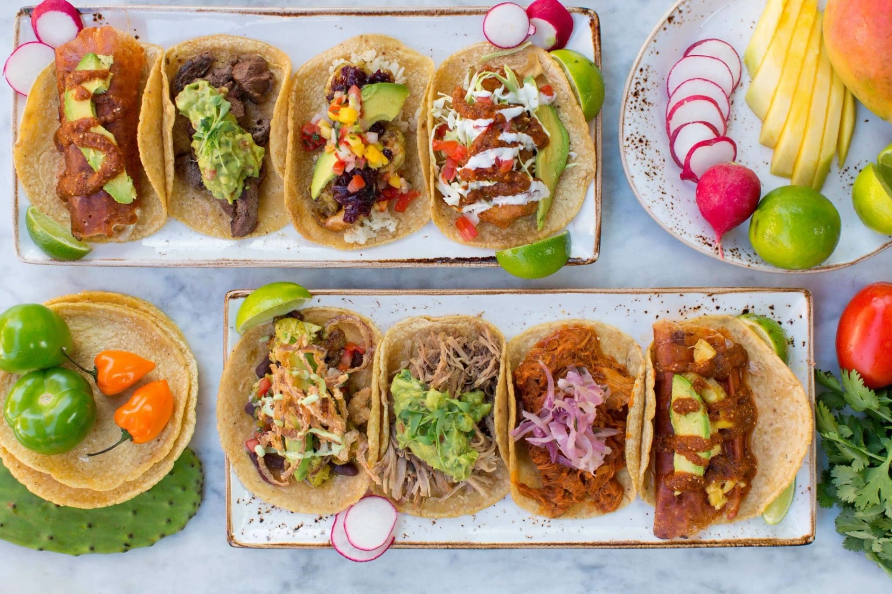
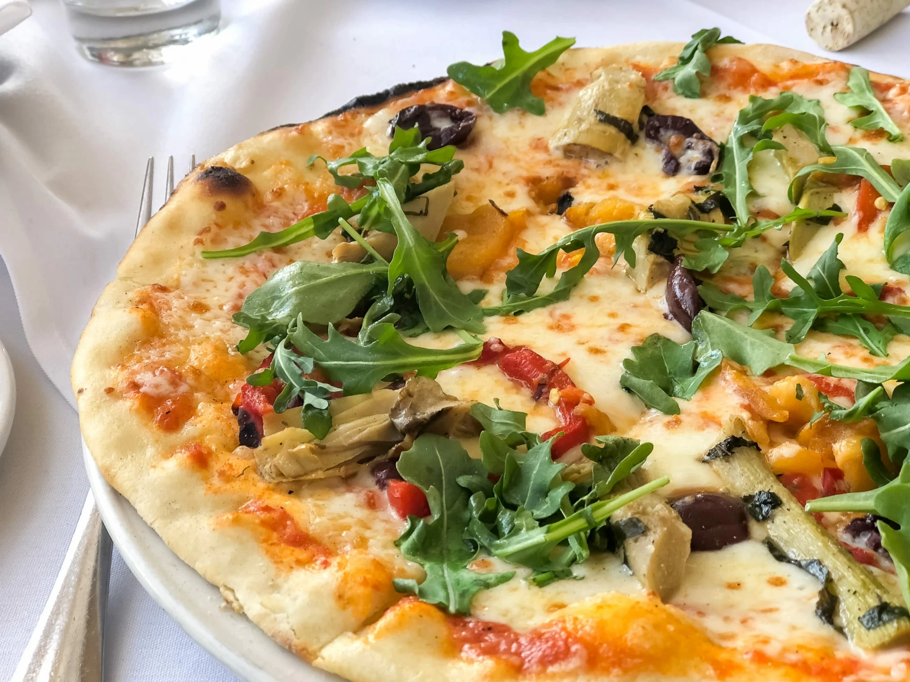
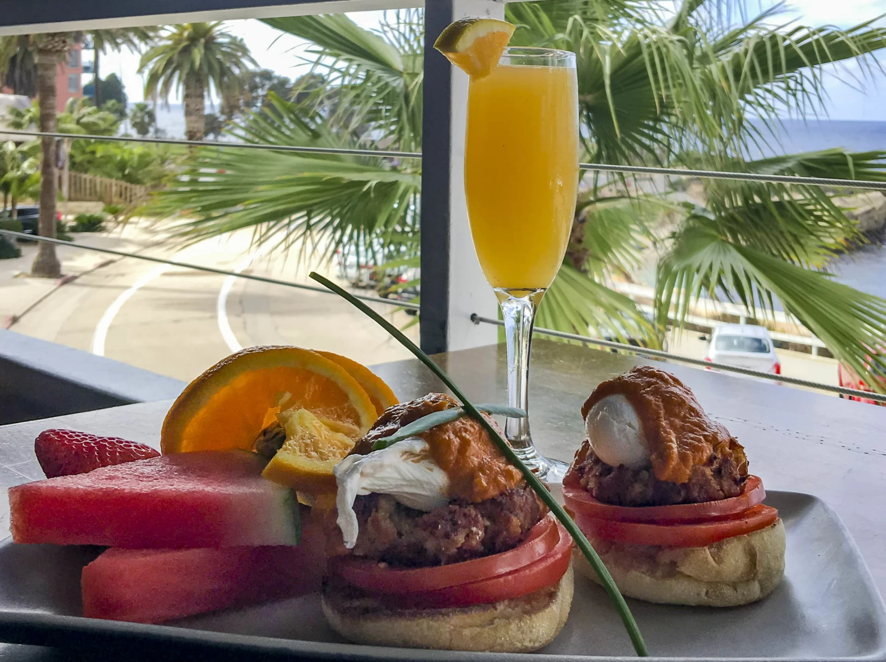
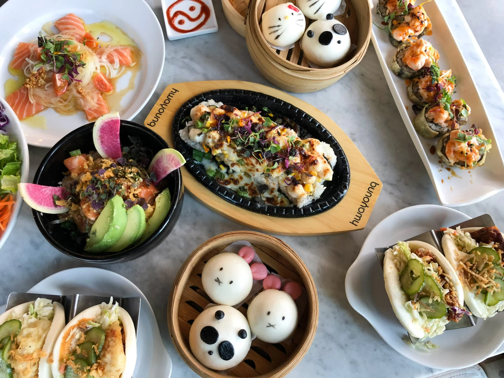
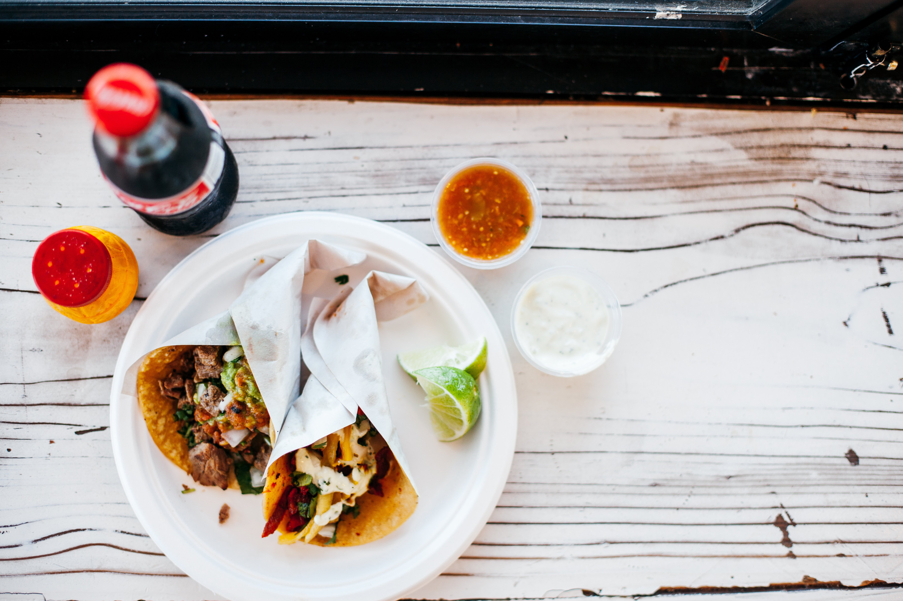
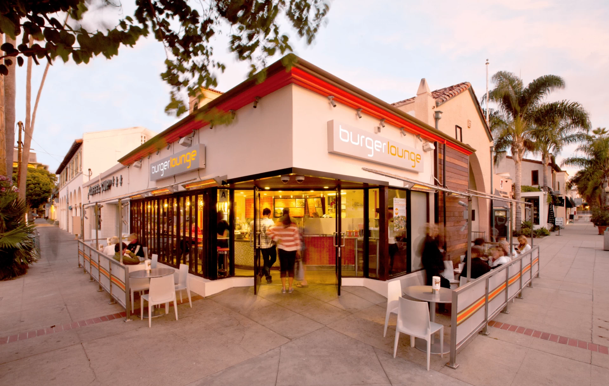

© Copyright 2021
La Jolla

Puesto

1026 Wall St, La Jolla, CA 92037
Hours
Sunday through Thursday 11 a.m. to 9 p.m.
Friday and Saturday 11 a.m. to 10 p.m.
El Pescador Fish Market
Piatti

2182 Avenida De La Playa, La Jolla, CA 92037
Hours
Monday through Thursday 11 a.m. to 9 p.m.
Friday 11 a.m. to 9:30 p.m.
Saturday 10 a.m. to 9:30 p.m.
Sunday 10 a.m. to 9 p.m.
Caroline's Seaside Cafe
The Cottage La Jolla
Brockton Villa

1235 Coast Blvd, La Jolla, CA 92037
Hours
Monday through Friday 9 a.m. to 3 p.m.
Saturday and Sunday 8 a.m. to 4 p.m.
Harumama and Blue Ocean Sushi

1250 Prospect St, La Jolla, CA 92037
Hours
Monday through Thursday 11a.m. to 9:30 p.m.
Friday and Saturday 11 a.m. to 10 p.m.
Parakeet Cafe
Taco Stand

621 Pearl St, La Jolla, CA 92037
Hours
Monday through Thursday 9 a.m. to 9 p.m.
Friday and Saturday 9 a.m. to 10 p.m.
Sunday 9 a.m. to 9 p.m.
Burger Lounge

1101 Wall St, La Jolla, CA 92037
Hours
Sunday through Thursday 11 a.m. to 7 p.m.
Friday and Saturday 11 a.m. to 8 p.m.